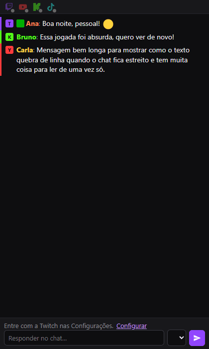
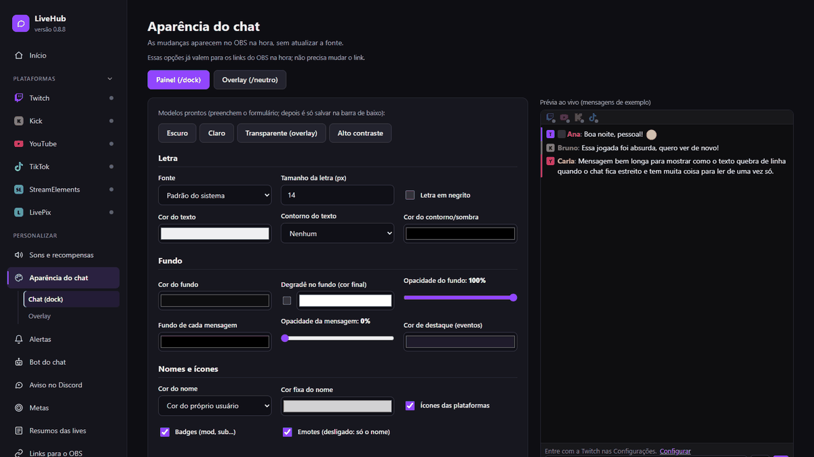
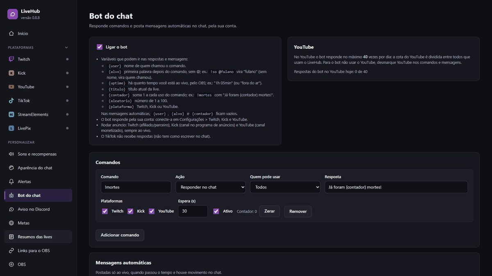
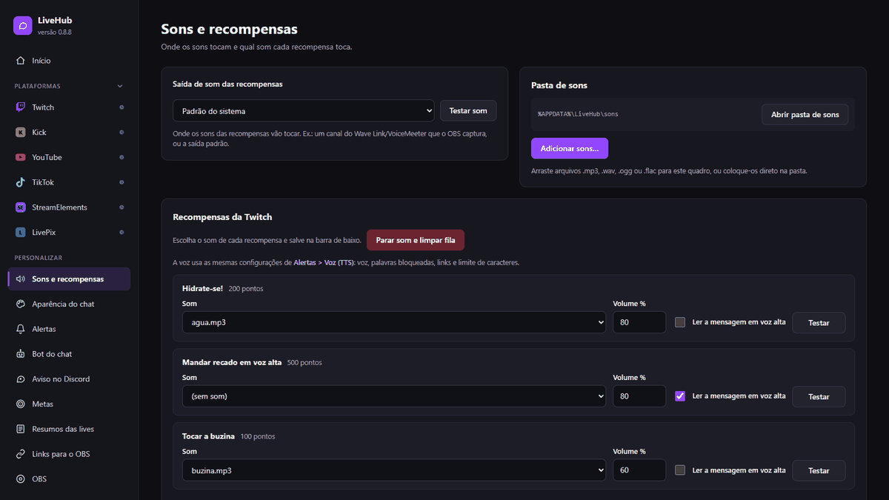
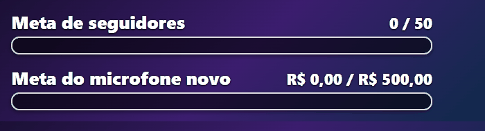
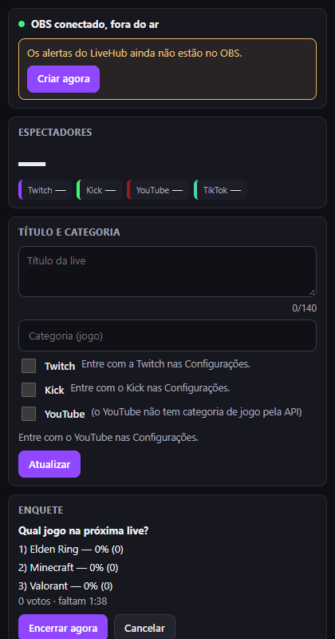
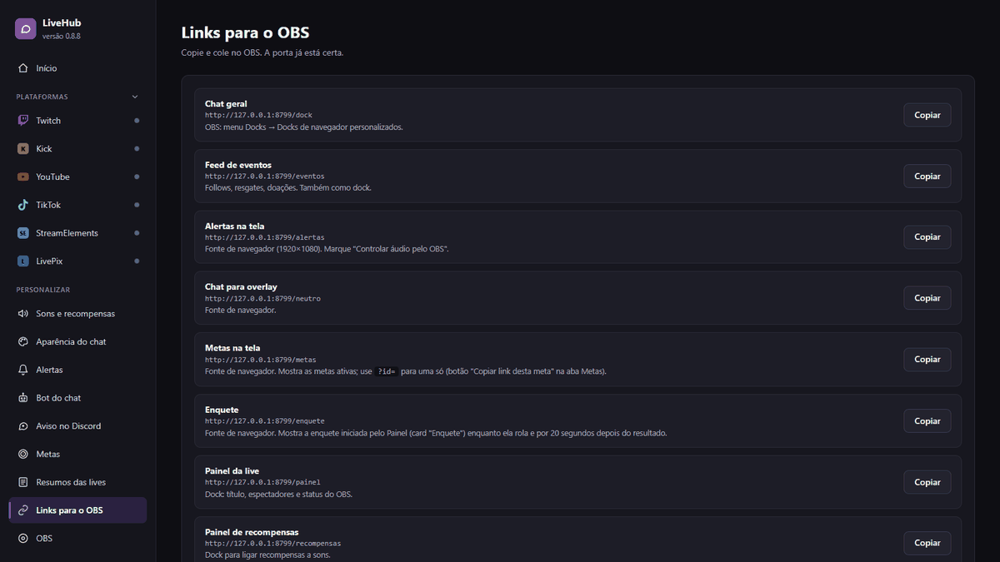

Chat de todas as plataformas
Mensagens da Twitch, Kick, YouTube e TikTok juntas, num painel (dock) dentro do OBS. Entrando com a sua conta você responde pelo próprio painel e modera: apagar mensagem, timeout e banir.

Chat, alertas, bot e painel da live — Twitch, Kick, YouTube e TikTok num programa só, leve e para Windows.
Baixar o LiveHub para WindowsPara usar, você precisa de uma key de acesso (LH-XXXX-XXXX). Peça sua key ao Carlos Gabryel.
Chega de abas e programas espalhados. Você abre o LiveHub e o OBS, e o chat de todas as plataformas, os alertas e o bot já funcionam.
Mensagens da Twitch, Kick, YouTube e TikTok juntas, num painel (dock) dentro do OBS. Entrando com a sua conta você responde pelo próprio painel e modera: apagar mensagem, timeout e banir.

Follow, sub, raid, bits, Super Chat e doações aparecem na live com som, imagem ou vídeo, e podem ser lidos em voz alta.
Fonte, tamanho, cores, contorno, ícones, emotes e animações. As mudanças valem na hora, sem reiniciar.

Comandos com variáveis, mensagens automáticas e controle de quem pode usar cada comando.

Ligue um som a cada recompensa do canal, ou faça o LiveHub ler em voz alta (TTS) o que o espectador escreveu.

Barras de metas que sobem sozinhas e enquetes votadas pelo público digitando o número no chat.

Veja se o OBS está ao vivo, os espectadores somados de todas as plataformas e troque título e categoria sem sair do OBS.

O LiveHub acha o OBS sozinho e cria as fontes com um clique em “Criar fontes no OBS”. Ou copie os links prontos.

Aviso no Discord quando a live começa, resumo do fim da live (duração, pico de espectadores, seguidores, subs, doações e quem mais falou), atualização automática com um clique, e ele fica na bandeja do Windows, podendo iniciar junto com o Windows.
Medido no PC do criador, com os canais conectados.
Leva poucos minutos.
LH-XXXX-XXXX).O SmartScreen avisa porque o programa ainda não tem assinatura digital. Alguns antivírus também podem reclamar de programas feitos com PyInstaller; se precisar, adicione a pasta do LiveHub às exceções.
Sim. O programa só funciona com uma key de acesso (formato LH-XXXX-XXXX). Peça a sua ao Carlos Gabryel e cole na tela de ativação depois de instalar.
Uma key funciona em até 2 PCs.
Sim. O programa confere a key online pelo menos a cada 48 horas. Uma live em andamento não é interrompida.
Só leitura: o TikTok não permite responder nem moderar por aplicativos. O chat só conecta quando a live está no ar.
Não. O nome do canal já basta para ler chat e eventos. A conta só é necessária para responder, moderar, usar o bot e trocar título/categoria.
Windows 10 ou 11 (64 bits), internet e o OBS.